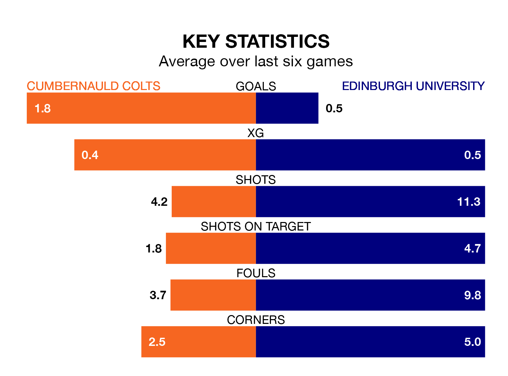

Relegation candidates Edinburgh University face a challenge away against high-flying Cumbernauld Colts at the Broadwood Stadium on Saturday.
Edinburgh University are rooted to the bottom of the Lowland Football League table, and have picked up just two wins and one draw in their 32 games to date.
Colts, meanwhile, are fourth in the standings with 59 points, having won 17 and drawn eight, and are 13 points behind table-toppers East Kilbride.
With 16 goals in 32 games so far this season, Edinburgh University are the league's lowest scorers with 0.5 goals per game. And they are conceding more than average, letting in 123 goals at a rate of 3.8 per game.
Cumbernauld Colts, meanwhile, are above average scorers, with 2.0 goals per game, compared to a league average of 1.7. They have conceded 1.3 goals per game.
Colts are in mixed form in the Lowland Football League, with two wins and two draws from their last six games.
With a win and five losses over that period, the visitors' form is worse – they have taken three points from 18, compared to the home team's eight.
In the last 10 years, Cumbernauld Colts and Edinburgh University have played each other on 15 occasions. Cumbernauld Colts won nine of them, Edinburgh University four, and they drew twice.
On average, Colts scored 2.2 goals and Edinburgh University 1.5 in those matches.
Their last meeting was on February 6, when Cumbernauld Colts won 3-0 at home.
Cumbernauld Colts's last match was on April 6, a 4-2 win against Cowdenbeath.
Edinburgh University lost 4-0 against Edusport Academy last time out, also on April 6.
Updated: 11:20 (UTC), 09/04/24